1. Grand Teton National Park
Albeit the park being smaller than its fellow peers, Grand Teton is a must-visit! The Teton mountain range was incredible, and there was so much to see.
Since we only had a day there, we decided to take the ferry across Jenny Lake to hike Cascade Canyon Trail. This has got to be my favorite hike of all. The scenery was breath-taking - we constantly found ourselves in awe!

 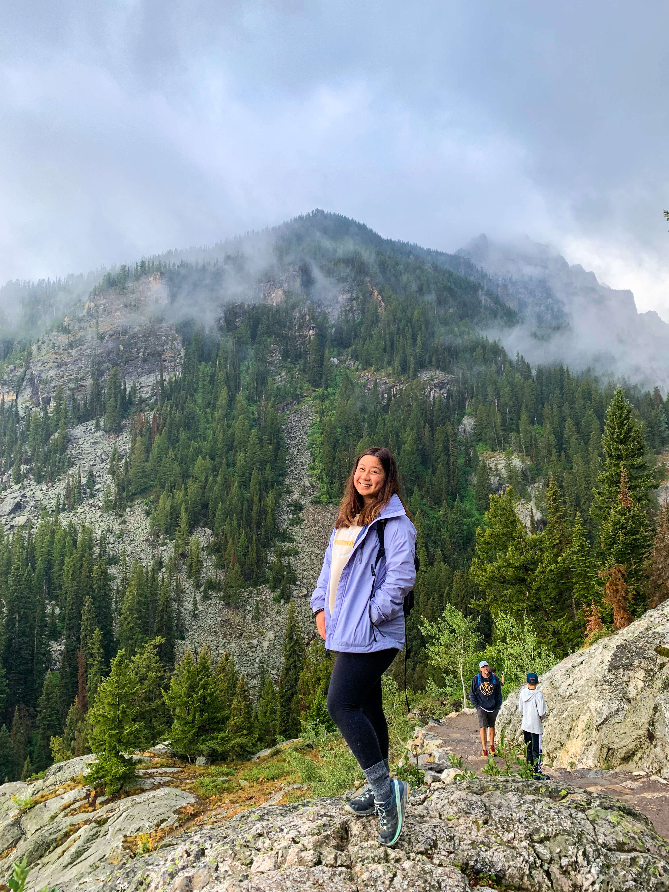
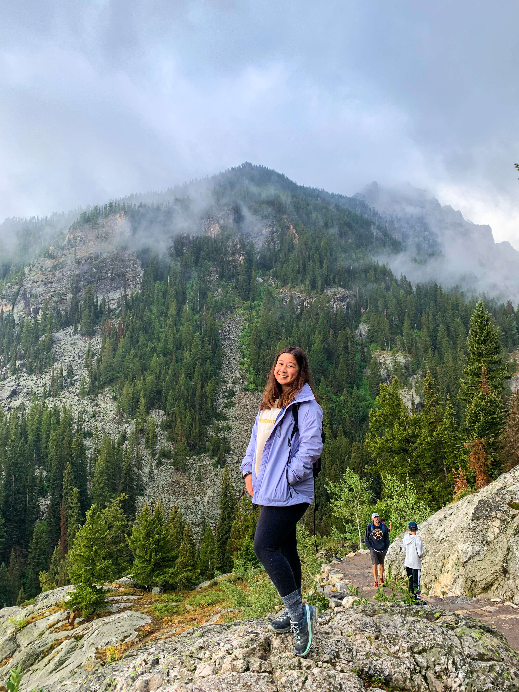

 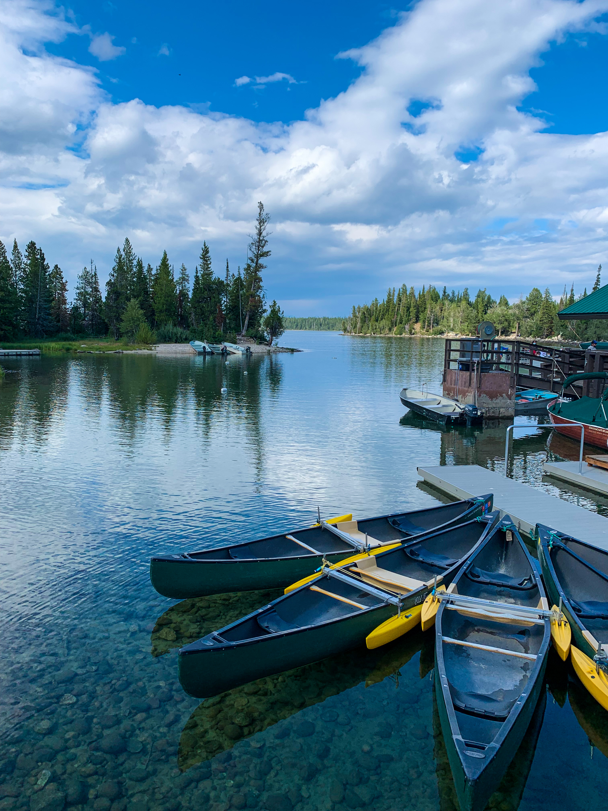
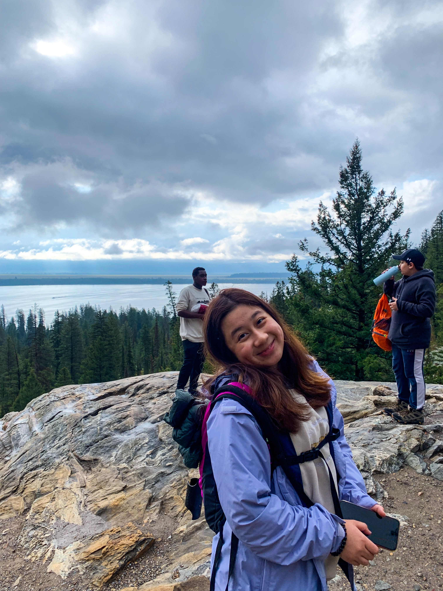
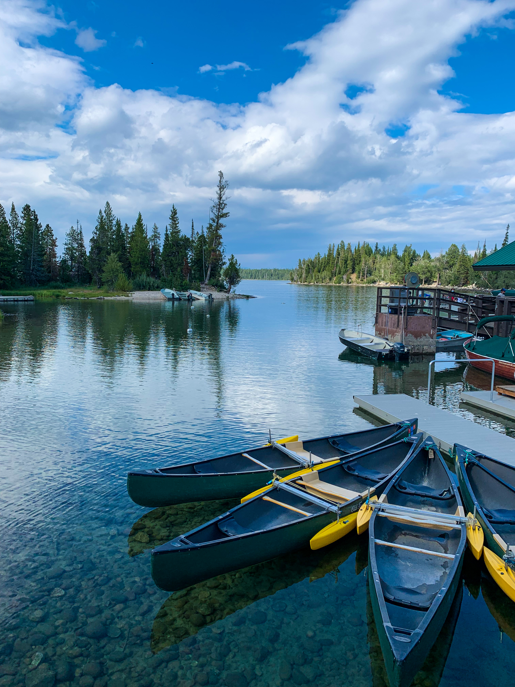
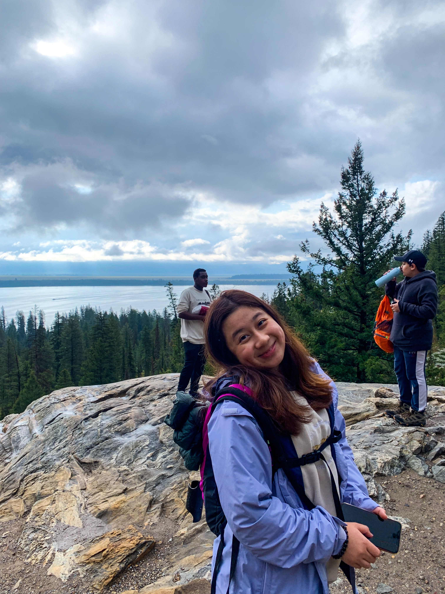
After a long hike up the canyon trail, we decided to have lunch at Inspiration point, a famous destination for those who did not want to hike up Cascade Canyon Trail.
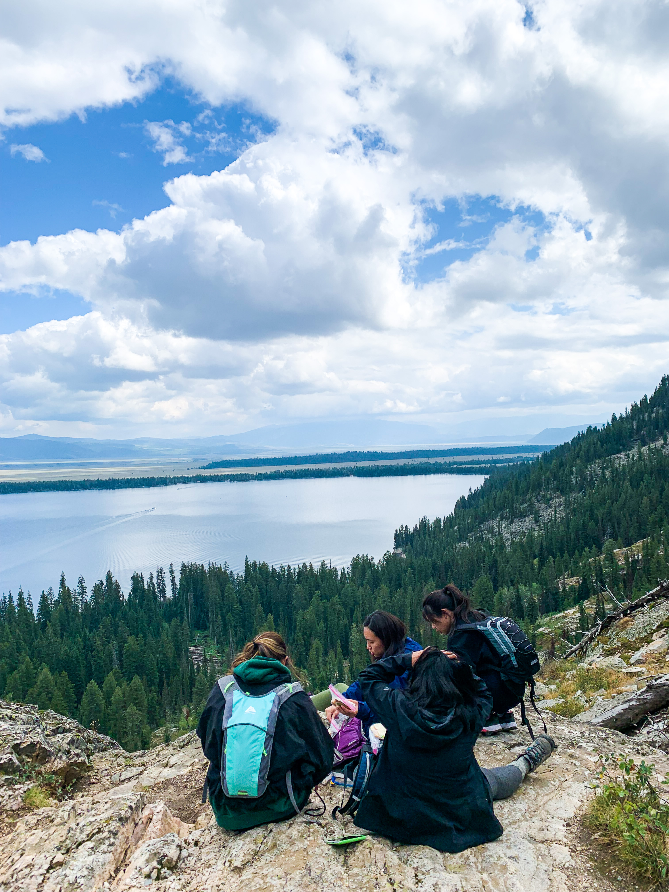2. Yellowstone National Park
What's a trip to Wyoming if you don't visit Yellowstone? This park was huge! To get from one end to the other, it takes about 4-7 hours. Can you image how insanely huge that is!
Within Yellowstone's 2.2 million acres, you will have unparalleled opportunities to observe wildlife in an intact ecosystem, explore geothermal areas that contain about half the world’s active geysers, and view geologic wonders like the Grand Canyon of the Yellowstone River.
We only spent two days in Yellowstone so we decided to hit the most famous spots within the park!
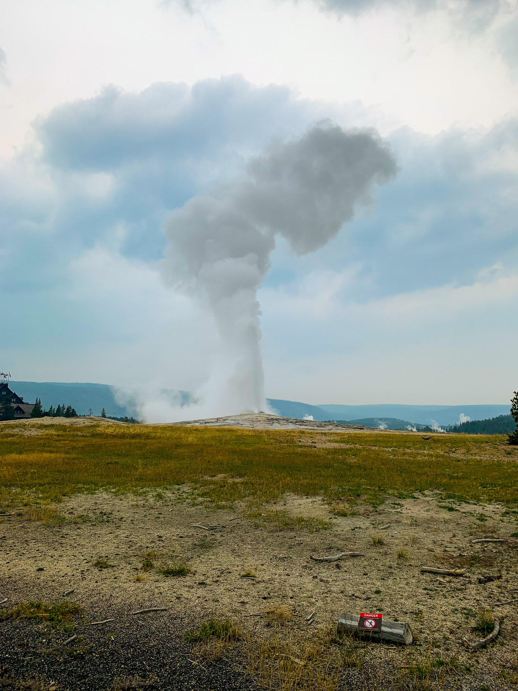 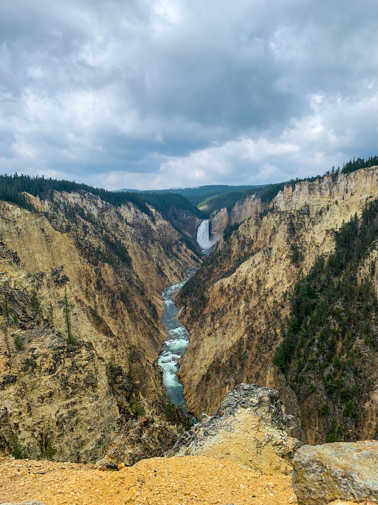 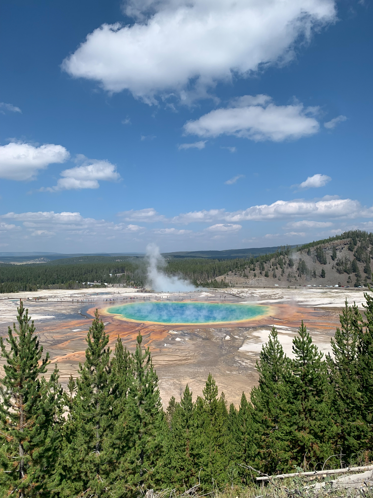 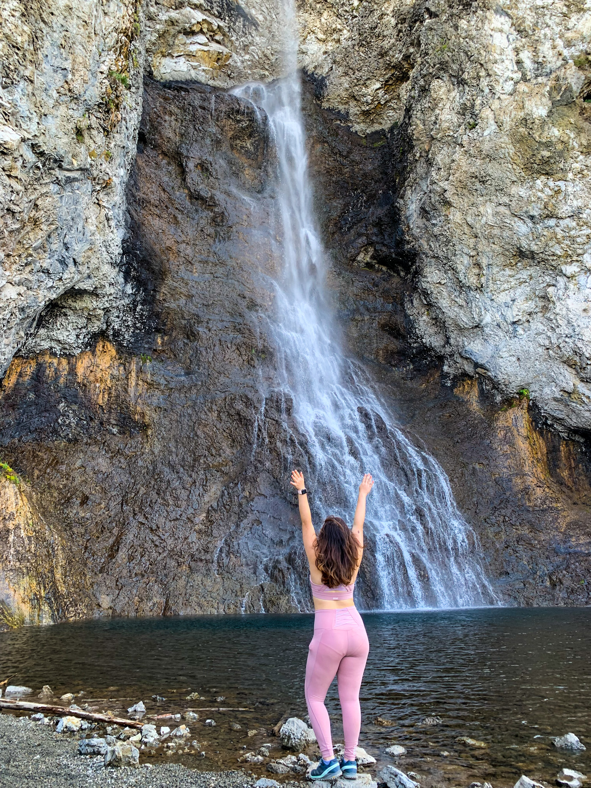